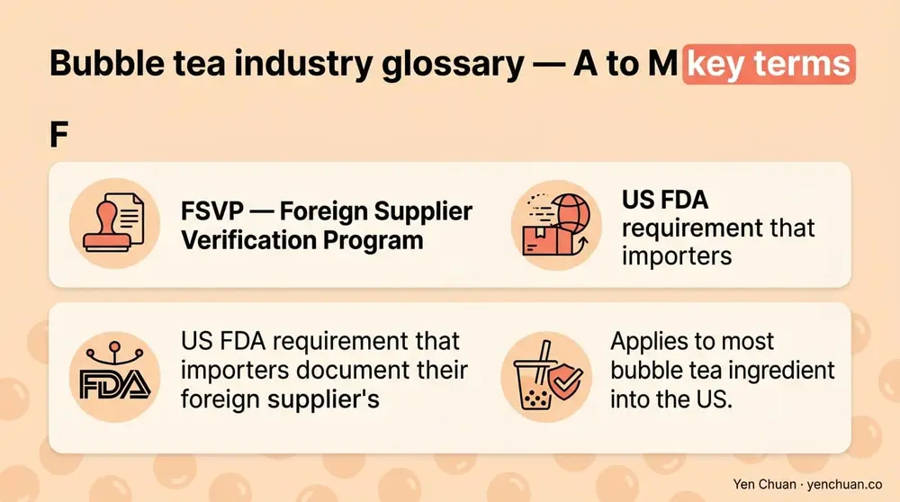
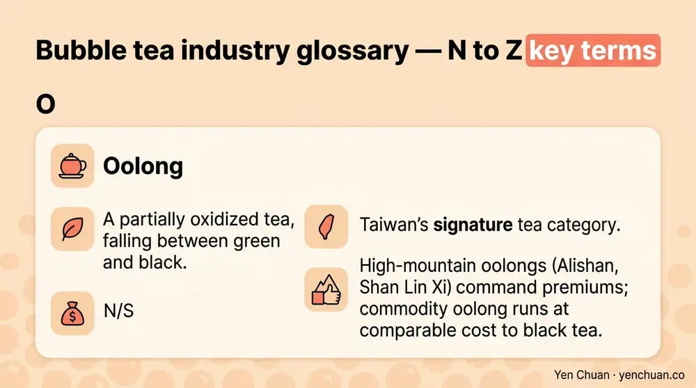

Articles / Business & sourcing
Bubble Tea Industry Glossary: 50 B2B Terms
2026-02-19 · Industry Trends, Sourcing, Technical Guide

Procurement calls for bubble tea ingredients surface the same 50 or so technical terms again and again — industry jargon, regulatory acronyms, and Taiwanese words that global buyers half-know. This glossary defines the 50 terms every beverage buyer, supply chain manager, or franchise partner should use fluently in a supplier conversation. Ordered A to Z with short, procurement-ready definitions.
A
Allulose — A rare sugar that delivers 70% of sucrose sweetness at 10% of the calories. Used in low-sugar formulations because it browns like sucrose. Not yet approved in all ASEAN markets.
Ambient shipping — Dry-container transit at uncontrolled temperature (15-30°C). Correct mode for dried pearls, sealed powders, and sugar-based syrups. Roughly half the cost of reefer.
Assam tea — A malty, full-bodied black tea from Assam, India. One of three workhorse bases for classic milk tea; higher tannin stands up to milk and sugar.
B
Boba — Originally a slang term for tapioca pearls in Taiwan. Now used interchangeably with "bubble tea" across most of North America.
BPOM — Indonesia's Food and Drug Authority (Badan Pengawas Obat dan Makanan). Mandatory pre-market registration for imported food ingredients, typically 4-8 months per SKU.
Brix — A measure of sugar concentration in liquids. Syrups for bubble tea typically run 55-65° Brix; higher Brix means more self-preserving and longer shelf life. Measured with a refractometer.
C
Ceylon tea — Black tea from Sri Lanka, medium-bodied with bright citrus notes. Commonly blended with Assam for milk tea bases. Ceylon's flavor profile works well with fruit syrups.
Cheese foam — A salty-sweet topping of cream cheese, whipping cream, and salt, popularized in Taiwan in the mid-2010s. Adds 80-120 calories and commands a USD 0.50-1.00 menu premium.
COA (Certificate of Analysis) — A lab-signed document showing a lot's test results — microbial, heavy metals, moisture, purity, allergens. Transfers food-safety liability from supplier to buyer. Never accept a shipment without a lot-matched COA.
Cold chain — Temperature-controlled logistics at chilled (2-8°C) or frozen (-18°C) throughout transit. Required for fresh fruit purees, dairy creamer, popping boba, and some pre-cooked pearls.
Creamer (non-dairy) — Powdered or liquid fat blend used to replace milk in bubble tea. Palm-oil-based is the commodity workhorse; coconut-based suits vegan positioning. Standard shelf life is 18-24 months sealed.
D
DDP (Delivered Duty Paid) — An Incoterm where the seller handles all costs and risk to the buyer's door. Convenient for first-time importers, adds 5-8% premium versus FOB.
Dunnage — Protective material (boards, foam, air bags) used to stabilize cartons in transit and storage. Proper dunnage prevents crush damage that destroys moisture-barrier packaging.
E
EXW (Ex Works) — An Incoterm where the buyer takes responsibility at the supplier's factory gate. Cheapest on paper, riskiest in practice for new importers.
F
FCL / LCL — Full Container Load versus Less than Container Load. FCL is cheaper per kilogram above 12-14 pallets; LCL via a consolidator fits smaller orders. Most mature operators run FCL.
FEFO (First-Expiry, First-Out) — Inventory rotation by actual lot expiry date rather than receiving date. The correct standard for bubble tea ingredients because lots received together often carry different production dates.
FOB (Free On Board) — An Incoterm where the seller handles costs to the port of origin; buyer pays ocean freight and destination fees. The most common mode for Taiwan bubble tea exports (FOB Kaohsiung or Taichung).
Fructose syrup — A high-fructose corn or fruit-derived liquid sweetener used in bubble tea for cleaner mouthfeel than granulated sugar. Typically runs 55-65% fructose; commonly abbreviated HFCS-55.
FSSC 22000 — Food Safety System Certification, a GFSI-recognized standard combining ISO 22000 and technical specifications. Held by most export-tier Taiwan manufacturers.
FSVP — Foreign Supplier Verification Program. US FDA requirement that importers document their foreign supplier's safety controls. Applies to most bubble tea ingredient imports into the US.

G
Grass jelly — A soft black jelly made from the mesona chinensis plant, used as a topping. Low calorie and popular in Hong Kong and Southeast Asian bubble tea menus.
H
HACCP — Hazard Analysis and Critical Control Points. A systematic food safety framework required for export-grade bubble tea ingredient manufacturers.
Halal — Certification attesting that ingredients and processes comply with Islamic dietary law. JAKIM (Malaysia) and MUI (Indonesia, now BPJPH) certifications are the most widely recognized in ASEAN.
HMF (Hydroxymethylfurfural) — A browning compound formed when sugars break down under heat. High HMF in syrup indicates overheating during production and signals a quality problem.
I
Incoterms — International Commercial Terms published by the ICC that define shipping responsibility split between buyer and seller. Common ones: EXW, FOB, CIF, DDP.
Instant pearls — Pre-cooked tapioca pearls vacuum-packed in syrup, ready in 5 minutes versus 25-30 minutes for dried pearls. Requires cool or chilled shipping.
ISO 22000 — International food safety management standard covering the full supply chain. Baseline certification for most Taiwan ingredient exporters.
J
JAKIM — Malaysia's halal certification body (Department of Islamic Development). JAKIM certification is recognized across ASEAN and accepted in most Middle East export lanes.
Jasmine tea — Green tea scented with jasmine flowers, a classic floral base for fruit teas and milk teas. Jasmine number 1 (highest scent intensity) commands a premium over standard jasmine.
Jelly (konjac, coconut, grass) — Gelled solid toppings with chewy texture. Konjac is plant-derived and low-calorie; coconut jelly is firmer; grass jelly is herbal. All are shelf-stable sealed.
K
Kosher — Certification attesting to compliance with Jewish dietary law. OU (Orthodox Union) and Star-K are the most recognized kosher certifiers for bubble tea ingredients.
L
Lactose-free creamer — Non-dairy or enzymatically treated dairy creamer used for lactose-intolerant markets. Most Taiwan non-dairy creamer is naturally lactose-free because the fat base is palm or coconut.
Lot number — A production-batch identifier printed on every carton. The anchor for COA matching, traceability, and recall response. Never accept a shipment with missing or illegible lot numbers.
M
Maltodextrin — A corn-derived carbohydrate used as a bulking agent or flow aid in powders. Not inherently bad, but when it appears high on an ingredient list it signals dilution.
Matcha — Stone-ground green tea powder from shade-grown leaves. Ceremonial grade runs USD 60-150/kg; culinary grade runs USD 15-40/kg. Most bubble tea uses culinary grade.
MOQ (Minimum Order Quantity) — The smallest order a supplier will accept. Typical floors: one 20-foot container for commodity items, 200-500 kg per SKU for specialty. See our Milk Tea Supplier Guide for negotiation tactics.
N
Nitro tea — Tea infused with nitrogen gas for a creamy, cascading texture similar to nitro coffee. Niche on most bubble tea menus but growing in premium positioning.
Non-dairy creamer — See "Creamer (non-dairy)." Distinct from vegan creamer in that some non-dairy creamers still contain sodium caseinate (a milk derivative).
O
Oolong — A partially oxidized tea, falling between green and black. Taiwan's signature tea category. High-mountain oolongs (Alishan, Shan Lin Xi) command premiums; commodity oolong runs at comparable cost to black tea.

P
Palm oil (RSPO) — Palm oil certified by the Roundtable on Sustainable Palm Oil. RSPO Mass Balance runs 8-15% premium over uncertified; Segregated runs 15-25% premium.
Popping boba — Alginate-encapsulated liquid fruit that bursts on bite. Shelf-stable sealed but requires cool or chilled shipping because the alginate membrane weakens above 25°C.
Pudding topping — Custard-based soft topping, dairy or egg-containing. Shorter shelf life than jellies (9-12 months sealed, days opened).
Q
QA / QC — Quality Assurance and Quality Control. QA is the preventive system; QC is the testing and release function. Ask any supplier for the split before signing.
R
Reefer — Industry slang for a refrigerated shipping container. Reefer rates run roughly 2× dry container rates.
RSPO — Roundtable on Sustainable Palm Oil. Certification standard for palm oil in non-dairy creamer. Mass Balance, Segregated, and Identity Preserved are the three chain-of-custody tiers.
S
SKU (Stock Keeping Unit) — A unique product identifier covering flavor, size, and packaging variant. A bubble tea brand typically runs 15-30 ingredient SKUs plus 20-40 packaging SKUs.
Stevia — A plant-derived zero-calorie sweetener used in low-sugar bubble tea. Steviol glycosides (Reb A, Reb M) are the active compounds; Reb M tastes closest to sucrose.
Syneresis — Water release from a gel over time. Jelly toppings show syneresis when over-aged or stored warm; it looks like a watery layer in the can.
T
Tapioca pearls — Chewy spheres made from tapioca starch (cassava root), water, and caramel coloring for the black variety. See our tapioca pearl catalog for SKU specs.
Tea-to-water ratio — Brewing concentration, typically 30-50 g of tea per liter of water for bubble tea bases. Higher ratios stand up to milk and ice dilution.
U
UHT (Ultra-High Temperature) — A heat treatment (135-150°C for 2-5 seconds) that sterilizes dairy and liquid bases for extended shelf life. UHT creamer ships ambient in sealed aseptic packaging.
V
Vegan formulation — Recipes using no animal-derived ingredients. Most swaps are dairy creamer to coconut or oat, and gelatin to konjac or agar. Expect 10-20% cost uplift versus standard formulations.
W
Wholesale — Supply-chain tier selling to operators and retailers, not end consumers. Taiwan bubble tea wholesale typically means one-container MOQ; see our Taiwan vs China vs Southeast Asia sourcing comparison for regional wholesale landscape.
Authority Citations
- Codex Alimentarius — Food Safety Standards
- FDA Food Labeling Guide
- International Chamber of Commerce — Incoterms 2020
- RSPO — Roundtable on Sustainable Palm Oil
- Grand View Research — Bubble Tea Market Report
About Yen Chuan
Yen Chuan has been at the heart of Taiwan's bubble tea industry for over 20 years, supplying premium powders, syrups, tapioca pearls, and tea leaves to boba shops worldwide. With an in-house R&D lab and a commitment to quality, we're your partner in the boba business. This glossary is a working reference, updated as new terms enter the trade.
Need a Term We Didn't Cover?
If you're negotiating a contract and hit a term we didn't define here, get in touch with our team — we'll walk you through the specifics. For wholesale specs and certification details, browse the Yen Chuan online store.
Frequently Asked Questions
Q: What does MOQ mean in bubble tea wholesale? A: MOQ (Minimum Order Quantity) is the smallest order a supplier will accept. For Taiwan exporters, typical floors are one 20-foot container (8-10 tons) for commodity items like tapioca pearls and creamer, and 200-500 kg per SKU for specialty powders and syrups.
Q: What is the difference between boba and bubble tea? A: "Boba" originally referred only to tapioca pearls in Taiwan but has become synonymous with "bubble tea" in most of North America. "Bubble tea" refers to the full beverage category — tea plus milk plus toppings. In Asia, the two terms are still often used distinctly.
Q: What is a COA in food procurement? A: A Certificate of Analysis is a lab-signed document showing the test results for a specific production lot — microbial counts, heavy metals, moisture, purity, and allergen screens. It transfers food-safety liability from the supplier to the buyer and is mandatory for any legitimate B2B shipment.
Q: What does FOB Kaohsiung mean? A: FOB (Free On Board) Kaohsiung is an Incoterm meaning the Taiwan supplier delivers the goods to Kaohsiung port and clears them for export; the buyer takes responsibility for ocean freight, insurance, and destination clearing. It is the most common Taiwan bubble tea export term.
Q: What is RSPO certification and why does it matter for non-dairy creamer? A: RSPO (Roundtable on Sustainable Palm Oil) certifies palm oil production against environmental and social sustainability standards. For non-dairy creamer, RSPO certification is increasingly required by retail chains and large buyers. Expect an 8-15% cost premium for Mass Balance and 15-25% for Segregated.